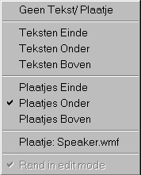
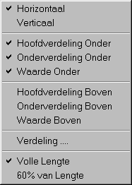
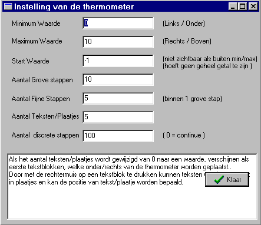

Zoals de naam reeds aangeeft is deze vraag speciaal bedoeld voor kinderen, maar hoeft deze vraag zeker niet beperkt te blijven tot de groep van kinderen. De vraag is in principe een meer keuze, 1 antwoord vraag (c.q. een discrete thermometer-vraag). De vraag en mogelijke antwoorden worden gegeven middels plaatjes. De vraag en de antwoorden kunnen bovendien ondersteund worden geluiden. De grootte van de antwoorden en de onderlinge afstand kunnen vrij worden ingesteld. Het plaatje dat bij de beantwoording wordt geselecteerd, wordt omgeven door een gekleurde rand. De kleur en de breedte van deze rand is instelbaar. Wordt een antwoord aangeklikt en is aan dit antwoord een geluid toegevoegd, dan wordt het geluid afgespeeld. De vraag zelf kan ondersteund worden met tekst en geluid. Het geluid van de vraag wordt afgespeeld als de vraag voor de eerste keer wordt getoond, danwel ergens willekeurig in het venster wordt geklikt.
Ook voor de "besturing" van de vragenlijst kan een speciale kinderlayout met plaatjes en geluid worden gekozen, zie onderstaand voorbeeld.
Voor de beoordeling van de vraag op grond van subschalen geldt hetzelfde als voor de meer keuze, 1 antwoord vraag.
onderstaand plaatje is nog in de ontwerp faze !!
Door met de rechtermuistoets op een plaatje te klikken, verschijnt onderstaande popup-menu, waarmee de specifieke instellingen van deze vraag kunnen worden uitgevoerd.

Wordt op dit menu-item geklikt, dan verschijnt onderstaand instellingen-scherm, dat verder voor zich spreekt.

Hiermee wordt voor het aangeklikte plaatje (antwoord) een nieuw antwoord ingevoegd en gevuld met het default plaatje.
Het aangeklikte antwoord en de bijbehorende instellingen verdwijnt.
Het aangeklikte plaatje kan worden gewijzigd. Zorg ervoor dat het plaatje bij de vragenlijst wordt bewaard.
Als er reeds een plaatje bij dit antwoord aanwezig was, staat de bestandsnaam in het popup-menu vermeld.
Bij het aangeklikte plaatje kan een geluid (.wav bestand) worden toegevoegd. Als bij de beantwoording van de vragenlijst dit antwoord wordt aangeklikt, dan wordt het geluid afgespeeld.
Als er reeds een geluid bij dit antwoord aanwezig was, staat de bestandsnaam in het popup-menu vermeld.
Exacte Weergave / Alles goed zichtbaar 
In de edit mode, is de weergave iets gewijzigd t.o.v. de werkelijke weergave. Bijvoorbeeld het vraagveld wordt getoond, ook als dit leeg is. Dit moet mogelijk zijn om er tekst in te kunnen voeren. Met deze regel kan omgeschakeld worden tussen exacte weergave en een alles goed zichtbare modus. Als het vraagveld tekst bevat, is deze regel gedisabled, omdat de exacte weergave gelijk is aan de mode alles goed zichtbaar.
© Copyright Instrumentele Dienst, 1999-2004